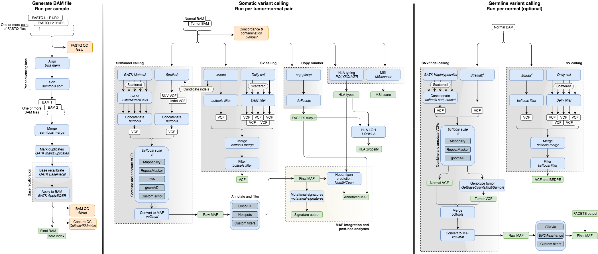
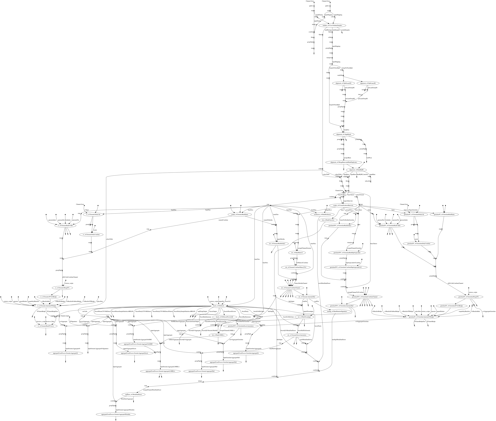

Time-Efficient Mutational Profiling in Oncology (Tempo)
Tempo is a computational pipeline for processing data of paired-end whole-exome (WES) and whole-genome sequencing (WGS) of human cancer samples with matched normals. Its components are containerized and the pipeline runs on the Juno high-performance computing cluster at Memorial Sloan Kettering Cancer Center and on Amazon Web Services (AWS). The pipeline was written by members of the Center for Molecular Oncology.
These pages contain instructions on how to run the Tempo pipeline. It also contains documentation on the bioinformatic components in the pipeline, some motivation for various parameter choices, plus an outline describing the reference resources used.
If there are any questions or comments, you are welcome to raise an issue.
Note: Tempo currently only supports human samples. The pipeline has only been tested for exome and genome sequencing experiments, and all reference files are in build GRCh37 of the human genome.
Table of Contents
1. Getting Started
1.1. Setup
1.2. Usage
1.3 Outputs
2. Pipeline contents
2.1. Bioinformatic Components
2.2. Reference Resources
- Genome Assembly
- Genomic Intervals
- RepeatMasker and Mappability Blacklist
- Preferred Transcript Isoforms
- Hotspot Annotation
- OncoKB Annotation
- gnomAD
- Panel of Normals for Exomes
2.3. Variant Annotation and Filtering
3. Help and Other Resources
4. Contributing
5. Acknowledgements
Pipeline Flowchart

Directed Acyclic Graph
